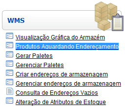
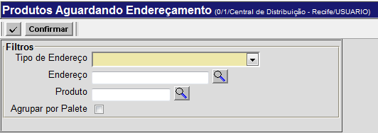
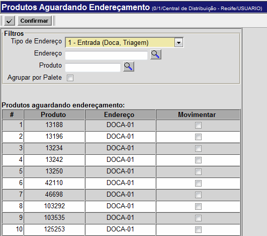
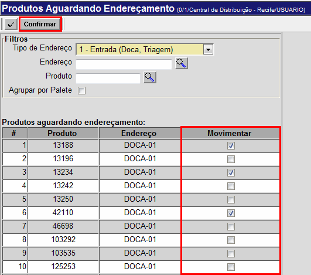
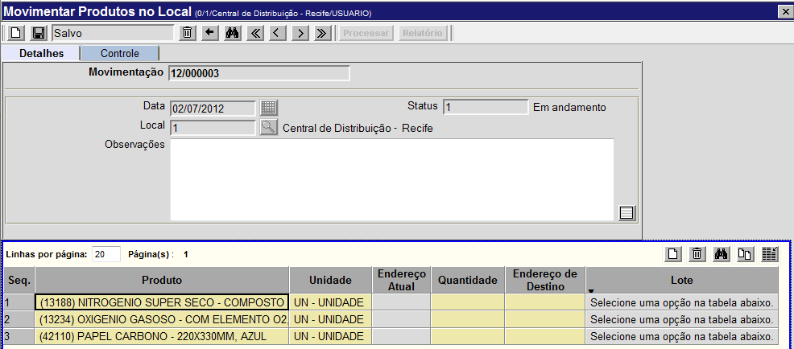
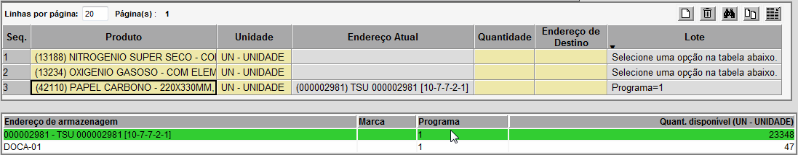

Produtos Aguardando Endereçamento [ Voltar ]Após serem feitos recebimentos ou separações no galpão, será necessário organizar os produtos e/ou paletes e transportá-los aos seus destinos finais. Para fazer isso, clique em "Produtos Aguardando Endereçamento", dentro do menu "WMS". 
O sistema vai abrir a seguinte tela: 
Após aberta a tela, siga os passos abaixo: 1º Passo: informe o tipo de endereço. Defina se o tipo é 1 (Entrada) ou 2 (Saída). Este campo é de preenchimento obrigatório. 2º
Passo: se necessário,
selecione um endereço e/ou um produto. Se desejar visualizar produtos localizados em um endereço específico - ou produtos específicos que estejam aguardando endereçamento - informe nos campos respectivos os nomes do
local e/ou do produto ou clique no botão 3º
Passo: clique no botão 
4º Passo: Selecione os produtos que devem ser movimentados. Clique nos quadros correspondentes aos produtos desejados, na coluna "Movimentar". Depois, clique no botão

A tela "Movimentar Produtos no Local" será aberta, contendo (na tabela) os dados do(s) produto(s) selecionado(s): 
5º Passo: informe os dados referentes a esta movimentação. Especifique as informações necessárias (ou seja, a quantidade e o endereço de destino). Uma vez preenchidos os campos da grade, passe para o 6° passo. 6º Passo: selecione o "Endereço Atual". Na parte inferior do formulário, selecione com um clique o endereço de armazenagem desejado, defina a quantidade a ser movimentada e clique no botão "Salvar" 
4°
Passo: clique no botão
|
 para concluir a movimentação.
para concluir a movimentação. para visualizar o relatório "Movimentação de Estoque Local". Para
imprimir o relatório, clique no botão
para visualizar o relatório "Movimentação de Estoque Local". Para
imprimir o relatório, clique no botão  [Imprimir]
do navegador.
[Imprimir]
do navegador.